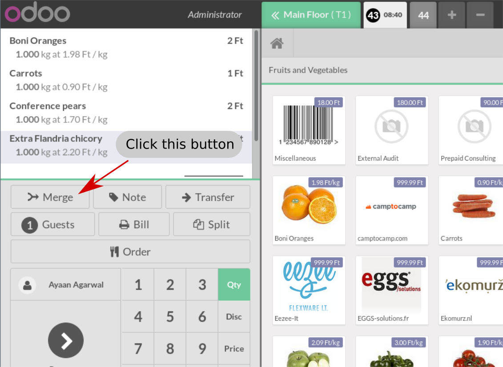

Has it ever happend, that a customer wanted to pay another person's or perhaps the whole table's orders, but you had to print multiple receipts, since the waiters have recorded them as separate orders? With this module, you'll be able to merge orders and therefore you won't confuse your customers as if you handed out multiple tickets.
Merge action button.